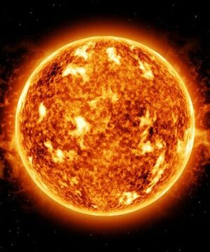
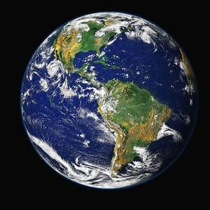

O Sistema Solar formou-se há cerca de 4,7 bilhões de anos. Contudo, sua origem ainda é questionada, visto que não há uma teoria que satisfaça inteiramente todas as questões que perpassam a formação do Sol e dos planetas.
SOL:

O Sol é a estrela central do Sistema Solar e é responsável por 99,86% da massa do sistema. É uma esfera quase perfeita de plasma quente, entrelaçada com campos magnéticos. Sua composição é majoritariamente de hidrogênio e hélio. A fusão nuclear do hidrogênio é a fonte de sua energia, que é liberada na forma de luz e calor. O Sol tem um diâmetro de 1.392.700 km, o que é 109 vezes maior que o da Terra. A distância média da Terra ao Sol é de cerca de 150 milhões de km2. A luz solar demora aproximadamente 8 minutos e 18 segundos para chegar à Terra. A energia do Sol é essencial para a vida na Terra, pois é utilizada pelas plantas na fotossíntese e fornece calor para manter a temperatura adequada para a vida.
TERRA:

A Terra é o terceiro planeta mais próximo do Sol e é o único lugar conhecido no universo que abriga vida. Formada há cerca de 4,56 bilhões de anos, a vida surgiu na Terra um bilhão de anos depois. A superfície da Terra é composta principalmente por oceanos de água salgada, que cobrem cerca de 71% de sua superfície, com o restante consistindo em continentes e ilhas. A atmosfera da Terra é composta principalmente de nitrogênio e oxigênio. A existência de água em estado líquido, juntamente com a temperatura média de 14ºC, torna possível a vida no planeta. A Terra tem um formato que se aproxima de um geoide, devido ao seu centro gravitacional.
MARTE:
.jpg)
Marte é o quarto planeta a partir do Sol e o segundo menor do Sistema Solar, atrás apenas de Mercúrio. É frequentemente descrito como o “Planeta Vermelho” devido ao óxido de ferro predominante em sua superfície, que lhe dá uma aparência avermelhada1. Marte é um planeta rochoso com uma atmosfera fina, composta principalmente de dióxido de carbono1. A superfície de Marte apresenta características que lembram tanto as crateras de impacto da Lua quanto vulcões, vales, desertos e calotas polares da Terra1. Marte tem duas luas conhecidas, Fobos e Deimos, que são pequenas e de forma irregular1. Atualmente, Marte está sendo explorado por várias espaçonaves.